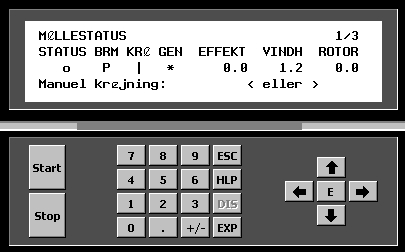

Le "Terminal de Commande" est un appareil portable qui doit être physiquement connecté au Contrôleur de l'éolienne. La figure suivante montre un exemple typique.

Le terminal dispose d'un petit écran et d'un clavier, à travers lequel vous pouvez accéder aux différentes fonctionnalités en parcourant un menu arborescent. Il permet d'accéder à un ensemble de fonctions, qui peuvent être classées dans les groupes suivants;
•Pour le contrôle de la production. Il y a deux boutons: "START" et "STOP".
La commande "START" signifie vraiment "vous êtes autorisé à démarrer si les conditions pour le faire sont remplies".
La commande "STOP" signifie réellement "initier un arrêt ordonné immédiatement".
•Pour accéder aux données de production. Valeurs de vélocité de vent, direction de vent, puissance active et réactive, accumulées d'énergie, etc.
•Pour accéder aux paramètres internes pour les sous-systèmes de contrôle interne.
•Pour le contrôle manuel de certains composants. par example, les moteus du system d'orientation de la Nacelle, the angle d'attaque des pales, etc,
•Pour lire les variables internes du contrôleur , temperature du generator, niveau d'huile du multiplicateur, etc.
Généralement, l'accès à certaines fonctionnalités critiques est protégé par des mots de passe.
Les menus d'accès aux différentes fonctionnalités n'étant pas standardisés, une formation spécifique est nécessaire pour chaque type d'éolienne.
Cet appareil est basique pour l'installation, la mise en service et la réparation de l'éolienne.